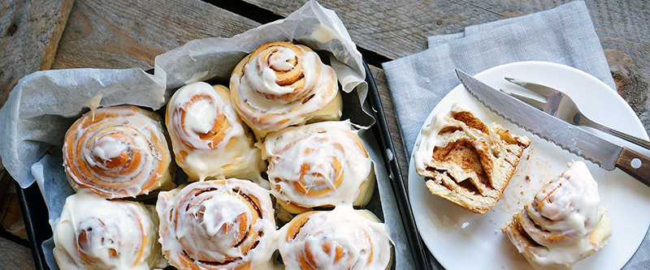

приготовление:
-
Растапливаем вместе 100 мл молока, 60 гр сливочного масла, 60 гр сахара и щепотку соли.
-
В другой чаше смешиваем 10 гр сухих дрожжей, 100 мл теплой воды и 1 ч.л. сахара. Ждем около 10 минут в тёплом месте пока запузырится и увеличится в объеме.
-
Вливаем опару в масляную смесь, добавляем 2 яйца. Перемешиваем венчиком. Постепенно всыпаем 570 гр муки и замешиваем тесто. Тесто нужно месить примерно минут 5-10, оно должно остаться мягким, стать эластичным и гладким. Убираем тесто в миску, накрываем полотенцем и ставим в теплое место на 30-40 минут. Тесто увеличится вдвое.
-
Для начинки смешиваем 150 гр коричневого сахара, 1 ст.л. какао, 1 ст.л. молотой корицы. Растапливаем в 40 гр сливочного масла. Тесто раскатываем в прямоугольник. Толщина где-то 5 мм. Смазываем пласт растопленым маслом. Равномерно распределяем сухую смесь. И скатываем пласт в большой рулетик. Рулет нужно нарезать на будущие булочки.
-
Можно выпекать в стеклянной форме и не смазывать. Выложить рулетики рядышком друг к другу, оставляя где-то 1-2 см. И пока греется духовка до 170 градусов, пусть они полежат и отдохнут перед выпечкой минут 15. Выпекайть примерно 20 минут до румяной корочки. Передержите - будут сухие, так что надо следить.
-
Для покрытия взбить миксером 200 гр сливочного сыра, 2 ст.л. сливок или молока и 170 гр сахарной пудры.
-
После готовности булочек достать их из духовки и покрыть кремом. Дать остыть до теплого и наслаждаться. Хранить в холодильнике, есть разогретыми.